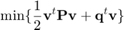

How to solve a GQKP problem using a Hopfield Network
The following optimization problem is proposed:
subject to:
Contents
Writing the problem in matrix form
The optimization problem can be writen as:

subject to
Shall there be inequalities, slack variables can be introduced to turn them into equalities
The GQKP problem to solve
From the matrix representation above, the problem can be written as:
P = [4,0;0,-2]; q = [0;0]; Aeq = [1,1]; beq = [1]; A = []; b = [];
Creating the network object
A set of options can be defined with the HopfieldNetworkGQKPOptions class using the hopfieldnetOptions function:
options = hopfieldnetOptions('SimFcn','talavan-yanez','TransferFcn','tanh');
From here, the Hopfield network can be created
net = hopfieldnet(P, q, A, b, Aeq, beq, options);
Training the network
This process is automatic from the following parametrization (see paper 9 in the references section).
alpha = 1; Phi = 2; eps = 3*alpha/2 + Phi/2; beta = -alpha/2 - Phi; Gamma(1,1) = (2*alpha + Phi/2); Gamma(2,2) = Phi/2 - alpha; net = train(net,Phi,alpha,beta,eps,Gamma);
Simulating the Hopfield Network
Starting point
V0 = [0.6;0.2]; V = sim(net, V0)
V =
0
1
The obtained solution is in fact the global optimum.
Energy plot
energyplot(net)